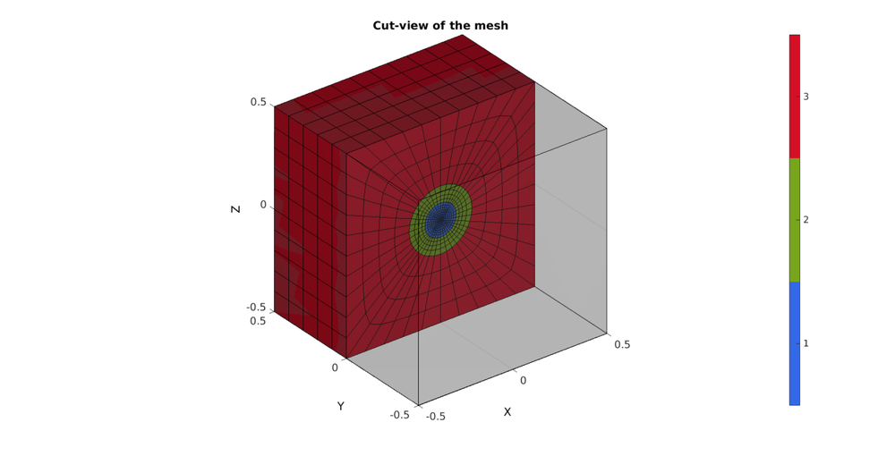
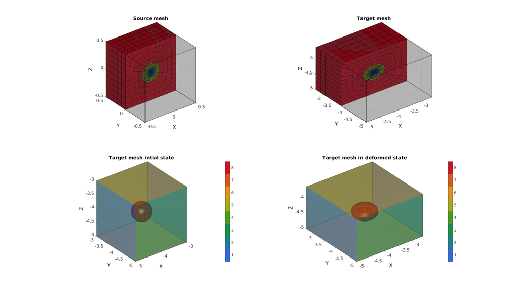

DEMO_FEBio_multi_scale_analysis
Below is a demonstration for: 1) Importing data from a pre-run model 2) Doing multi-scale analysis for each element
Contents
clear; close all; clc;
First run other demo with hexahedral elements
DEMO_FEBio_block_uniaxial_compression; close all; %Close figures
Warning: febStruct2febFile is depricated and will be removed in future releases. Update your codes to use febioStruct2xml, see HELP_febioStruct2xml (furthermore febio_spec version 2.5 is recommended) %%%%%%%%%%%%%%%%%%%%%%%%%%%%%%%%%%%%%%%%%%%%% --- Writing FEBio XML object --- 18-Feb-2018 16:23:34 Using febio_spec: 2.0 Adding Module level Adding Control level Adding Material level Adding Geometry level ----> Adding node field ----> Adding element field ----> Adding hex8 element entries.... ----> Adding NodeSet field Adding Boundary level ----> Defining fix type boundary conditions ----> Defining prescribe type boundary conditions Adding LoadData level ----> Defining load curves Adding Output level ----> Adding plotfile field ----> Adding logfile field Writing .feb file --- Done --- 18-Feb-2018 16:23:34 %%%%%%%%%%%%%%%%%%%%%%%%%%%%%%%%%%%%%%%%%%%%% --- STARTING FEBIO JOB --- 18-Feb-2018 16:23:34 Waiting for log file... Proceeding to check log file...18-Feb-2018 16:23:34 ------- converged at time : 0.1 ------- converged at time : 0.2 ------- converged at time : 0.3 ------- converged at time : 0.4 ------- converged at time : 0.5 ------- converged at time : 0.6 ------- converged at time : 0.7 ------- converged at time : 0.8 ------- converged at time : 0.9 ------- converged at time : 1 --- Done --- 18-Feb-2018 16:23:35
Plot settings
fontSize=15; faceColor1='g'; faceColor2='r'; faceAlpha1=0.3; faceAlpha2=1; edgeColor=0.*ones(1,3); edgeWidth=2; markerSize=2; cMap=gjet(250);
Control parameters
% path names defaultFolder = fileparts(fileparts(mfilename('fullpath'))); savePath=fullfile(defaultFolder,'data','temp'); modelNameEnd='tempModel'; modelName=fullfile(savePath,modelNameEnd); %Material parameters %1=core, material 2=cell mantel, 3=ecm k_factor=200; c1=1e-3; m1=2; k1=c1*k_factor; c2=2*c1; m2=2; k2=c2*k_factor; c3=c1/3; m3=2; k3=c3*k_factor; % FEA control settings numTimeSteps=10; %Number of time steps desired max_refs=25; %Max reforms max_ups=0; %Set to zero to use full-Newton iterations opt_iter=6; %Optimum number of iterations max_retries=5; %Maximum number of retires dtmin=(1/numTimeSteps)/100; %Minimum time step size dtmax=1/numTimeSteps; %Maximum time step size
cPar.boxWidth=1; cPar.OuterSphereRadius=cPar.boxWidth/6; cPar.InnerSphereRadius=cPar.OuterSphereRadius/2; cPar.CoreSphereRadius=cPar.InnerSphereRadius/2; cPar.numElementsCube=10; cPar.numElementsCubeSphere=4; cPar.numElementsSphereMantel=4; cPar.numElementsSphereCore=4; cPar.nSmooth=15; [Es,Vs,elementMaterialIndices,Fbs,Cbs]=hexMeshCubeSphere(cPar); %Create cut view Y=Vs(:,2); YE=mean(Y(Es),2); L=YE>mean(Y); [Fs,Cs]=element2patch(Es(L,:),elementMaterialIndices(L,:),'hex8');
VI=[0 0 0; 1 0 0; 1 1 0; 0 1 0; 0 0 1; 1 0 1; 1 1 1; 0 1 1;]-0.5; EI=[1:8]; [FI,~]=element2patch(EI); %Patch data for plotting Sn=[-1 -1 -1; 1 -1 -1; 1 1 -1; -1 1 -1; -1 -1 1; 1 -1 1; 1 1 1; -1 1 1]; Vx=[ones(1,8); VI']; Vx_inv=pinv(Vx); S=Vs; N=zeros(8,size(Vs,1)); for q=1:1:size(S,1) p=Vs(q,:);%mean(V,1); px=[1; p(:)]; n=Vx_inv*px; N(:,q)=n; S(q,:)=(Sn'*n)'; end a=1; b=1; c=1; for q=1:1:size(S,1) N(:,q)=1/8*(1+2*S(q,1)*VI(:,1)/a).*(1+2*S(q,2)*VI(:,2)/b).*(1+2*S(q,3)*VI(:,3)/c); end
cFigure; hold on; title('Cut-view of the mesh','FontSize',fontSize); gpatch(Fs,Vs,Cs); gpatch(FI,VI,0.5*ones(1,3),'k',0.25); axisGeom(gca,fontSize); colormap(gca,gjet(3)); icolorbar; camlight headlight; drawnow;
Run a for loop for all desired elements
numElements=size(E,1); for qElement=1%:1:numElements
Retrieve initial and deformed state
E_now=E(qElement,:);
V_now=V(E_now,:);
V_now2=V_def(E_now,:);
Map source elements to target in both states
Vs_now=zeros(size(Vs));
Vs_now2=zeros(size(Vs));
for q=1:1:size(Vs,1)
Vs_now(q,:)=sum(N(:,q*ones(1,size(Vs,2))).*V_now,1);
Vs_now2(q,:)=sum(N(:,q*ones(1,size(Vs,2))).*V_now2,1);
end
Visualization
cFigure;
subplot(2,2,1); hold on;
title('Source mesh');
gpatch(FI,VI,0.5*ones(1,3),'k',0.25); %Original mother mesh
gpatch(Fs,Vs,Cs); %Mapped mesh
colormap(gca,cMap); %colorbar;
axisGeom(gca,fontSize);
camlight headlight;
subplot(2,2,2); hold on;
title('Target mesh');
gpatch(FI,V_now2,0.5*ones(1,3),'k',0.25); %Original mother mesh
gpatch(Fs,Vs_now2,Cs); %Mapped mesh
colormap(gca,cMap); %colorbar;
axisGeom(gca,fontSize);
camlight headlight;
subplot(2,2,3); hold on;
title('Target mesh intial state');
gpatch(Fbs,Vs_now,Cbs,'none',0.5);
colormap(gca,gjet(9)); icolorbar;
axisGeom(gca,fontSize);
camlight headlight;
subplot(2,2,4); hold on;
title('Target mesh in deformed state');
gpatch(Fbs,Vs_now2,Cbs,'none',0.5);
colormap(gca,gjet(9)); icolorbar;
axisGeom(gca,fontSize);
camlight headlight;
drawnow;
 F_out=Fbs(ismember(Cbs,1:6),:);
bcPrescribeList=unique(F_out(:));
displacement_now=Vs_now2-Vs_now;
displacement_prescribe=displacement_now(bcPrescribeList,:);
CONSTRUCTING FEB MODEL
FEB_struct.febio_spec.version='2.0'; FEB_struct.Module.Type='solid'; % Defining file names FEB_struct.run_filename=[modelName,'.feb']; %FEB file name FEB_struct.run_logname=[modelName,'.txt']; %FEBio log file name %Geometry section FEB_struct.Geometry.Nodes=Vs_now; FEB_struct.Geometry.Elements={Es}; %The element sets FEB_struct.Geometry.ElementType={'hex8'}; %The element types FEB_struct.Geometry.ElementMat={elementMaterialIndices}; FEB_struct.Geometry.ElementsPartName={'Multiscale element'}; %Material section FEB_struct.Materials{1}.Type='Ogden'; FEB_struct.Materials{1}.Name='Block_material'; FEB_struct.Materials{1}.Properties={'c1','m1','k'}; FEB_struct.Materials{1}.Values={c1,m1,k}; FEB_struct.Materials{2}.Type='Ogden'; FEB_struct.Materials{2}.Name='Block_material'; FEB_struct.Materials{2}.Properties={'c1','m1','k'}; FEB_struct.Materials{2}.Values={c2,m2,k}; FEB_struct.Materials{3}.Type='Ogden'; FEB_struct.Materials{3}.Name='Block_material'; FEB_struct.Materials{3}.Properties={'c1','m1','k'}; FEB_struct.Materials{3}.Values={c3,m3,k}; %Control section FEB_struct.Control.AnalysisType='static'; FEB_struct.Control.Properties={'time_steps','step_size',... 'max_refs','max_ups',... 'dtol','etol','rtol','lstol'}; FEB_struct.Control.Values={numTimeSteps,1/numTimeSteps,... max_refs,max_ups,... 0.001,0.01,0,0.9}; FEB_struct.Control.TimeStepperProperties={'dtmin','dtmax','max_retries','opt_iter'}; FEB_struct.Control.TimeStepperValues={dtmin,dtmax,max_retries,opt_iter}; %Defining node sets FEB_struct.Geometry.NodeSet{1}.Set=bcSupportList_X; FEB_struct.Geometry.NodeSet{1}.Name='bcSupportList_X'; FEB_struct.Geometry.NodeSet{2}.Set=bcSupportList_Y; FEB_struct.Geometry.NodeSet{2}.Name='bcSupportList_Y'; FEB_struct.Geometry.NodeSet{3}.Set=bcSupportList_Z; FEB_struct.Geometry.NodeSet{3}.Name='bcSupportList_Z'; % FEB_struct.Geometry.NodeSet{4}.Set=bcPrescribeList; % FEB_struct.Geometry.NodeSet{4}.Name='bcPrescribeList'; %Adding BC information FEB_struct.Boundary.Prescribe{1}.Set=bcPrescribeList; FEB_struct.Boundary.Prescribe{1}.bc='x'; FEB_struct.Boundary.Prescribe{1}.lc=1; FEB_struct.Boundary.Prescribe{1}.nodeScale=displacement_prescribe(:,1); FEB_struct.Boundary.Prescribe{1}.Type='relative'; FEB_struct.Boundary.Prescribe{2}.Set=bcPrescribeList; FEB_struct.Boundary.Prescribe{2}.bc='y'; FEB_struct.Boundary.Prescribe{2}.lc=1; FEB_struct.Boundary.Prescribe{2}.nodeScale=displacement_prescribe(:,2); FEB_struct.Boundary.Prescribe{2}.Type='relative'; FEB_struct.Boundary.Prescribe{3}.Set=bcPrescribeList; FEB_struct.Boundary.Prescribe{3}.bc='z'; FEB_struct.Boundary.Prescribe{3}.lc=1; FEB_struct.Boundary.Prescribe{3}.nodeScale=displacement_prescribe(:,3); FEB_struct.Boundary.Prescribe{3}.Type='relative'; %Load curves FEB_struct.LoadData.LoadCurves.id=1; FEB_struct.LoadData.LoadCurves.type={'linear'}; FEB_struct.LoadData.LoadCurves.loadPoints={[0 0;1 1;]}; %Adding output requests FEB_struct.Output.VarTypes={'displacement','stress','relative volume'}; %Specify log file output run_disp_output_name=[modelNameEnd,'_node_out.txt']; run_force_output_name=[modelNameEnd,'_force_out.txt']; FEB_struct.run_output_names={run_disp_output_name,run_force_output_name}; FEB_struct.output_types={'node_data','node_data'}; FEB_struct.data_types={'ux;uy;uz','Rx;Ry;Rz'};
SAVING .FEB FILE
FEB_struct.disp_opt=0; %Display waitbars
febStruct2febFile(FEB_struct);
Warning: febStruct2febFile is depricated and will be removed in future releases. Update your codes to use febioStruct2xml, see HELP_febioStruct2xml (furthermore febio_spec version 2.5 is recommended) %%%%%%%%%%%%%%%%%%%%%%%%%%%%%%%%%%%%%%%%%%%%% --- Writing FEBio XML object --- 18-Feb-2018 16:23:39 Using febio_spec: 2.0 Adding Module level Adding Control level Adding Material level Adding Geometry level ----> Adding node field ----> Adding element field ----> Adding hex8 element entries.... ----> Adding NodeSet field Adding Boundary level ----> Defining fix type boundary conditions ----> Defining prescribe type boundary conditions Adding LoadData level ----> Defining load curves Adding Output level ----> Adding plotfile field ----> Adding logfile field Writing .feb file --- Done --- 18-Feb-2018 16:23:40
RUNNING FEBIO JOB
FEBioRunStruct.run_filename=FEB_struct.run_filename;
FEBioRunStruct.run_logname=FEB_struct.run_logname;
FEBioRunStruct.disp_on=1;
FEBioRunStruct.disp_log_on=1;
FEBioRunStruct.runMode='external';%'internal';
FEBioRunStruct.t_check=0.25; %Time for checking log file (dont set too small)
FEBioRunStruct.maxtpi=1e99; %Max analysis time
FEBioRunStruct.maxLogCheckTime=3; %Max log file checking time
[runFlag]=runMonitorFEBio(FEBioRunStruct);%START FEBio NOW!!!!!!!!
%%%%%%%%%%%%%%%%%%%%%%%%%%%%%%%%%%%%%%%%%%%%% --- STARTING FEBIO JOB --- 18-Feb-2018 16:23:40 Waiting for log file... Proceeding to check log file...18-Feb-2018 16:23:41 ------- converged at time : 0.1 ------- converged at time : 0.2 ------- converged at time : 0.3 ------- converged at time : 0.4 ------- converged at time : 0.5 ------- converged at time : 0.6 ------- converged at time : 0.7 ------- converged at time : 0.8 ------- converged at time : 0.9 ------- converged at time : 1 --- Done --- 18-Feb-2018 16:24:04
end

GIBBON www.gibboncode.org
Kevin Mattheus Moerman, gibbon.toolbox@gmail.com
GIBBON footer text
License: https://github.com/gibbonCode/GIBBON/blob/master/LICENSE
GIBBON: The Geometry and Image-based Bioengineering add-On. A toolbox for image segmentation, image-based modeling, meshing, and finite element analysis.
Copyright (C) 2018 Kevin Mattheus Moerman
This program is free software: you can redistribute it and/or modify it under the terms of the GNU General Public License as published by the Free Software Foundation, either version 3 of the License, or (at your option) any later version.
This program is distributed in the hope that it will be useful, but WITHOUT ANY WARRANTY; without even the implied warranty of MERCHANTABILITY or FITNESS FOR A PARTICULAR PURPOSE. See the GNU General Public License for more details.
You should have received a copy of the GNU General Public License along with this program. If not, see http://www.gnu.org/licenses/.